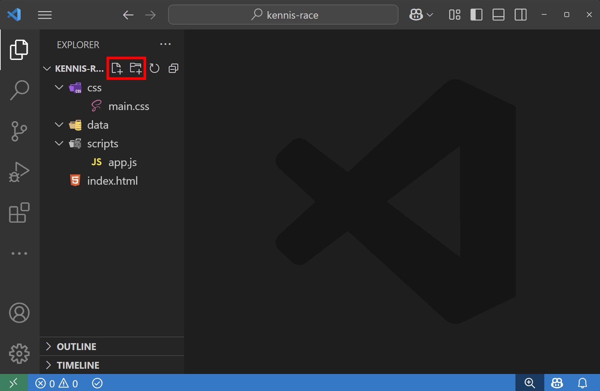
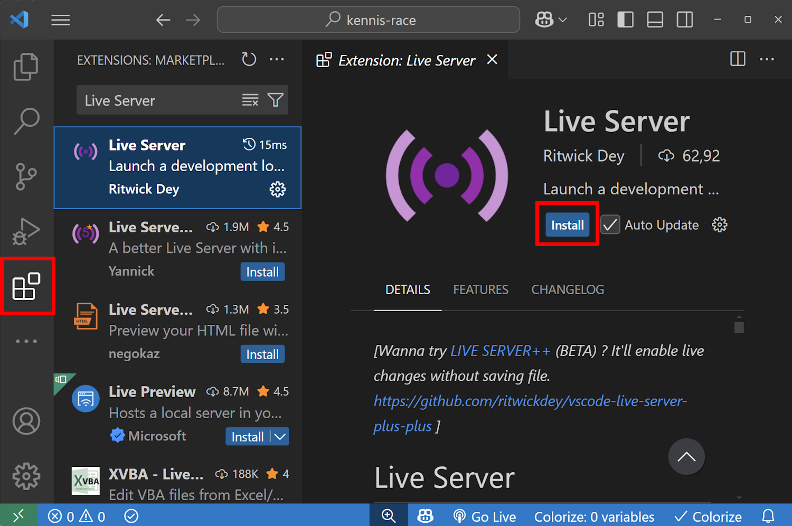
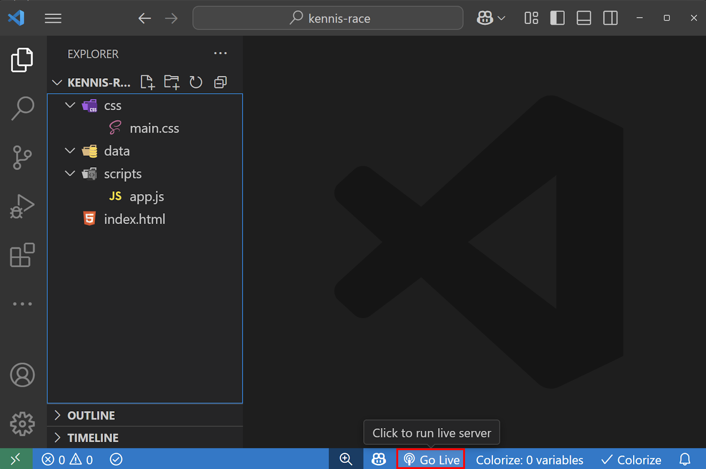

In deze tutorial maken we een quiz-minigame waarbij je 1 tegen 1 kunt spelen. De eerste speler die 10 punten behaalt, wint de game.

Hiervoor gebruiken we 3 codetalen
- HTML
- CSS
- JavaScript
Stap 1: Mappenstructuur
Download en installeer de code editor Visual Studio Code
-
1.1 Maak een nieuwe folder met de naam kennis-race.

-
1.2 Open Visual Studio Code en open de nieuwe folder.

- 1.3 De map- en bestandsstructuur ziet er zo uit: 
- 1.4 Installeer de Live Server extensie in Visual Studio Code. 
- 1.5 Start de Live Server door onderaan op Go Live te klikken. Dit opent een nieuw browservenster met je project. 
Stap 2: HTML
HTML vormt de basis van je website. Gebruikersinteractie volgt later.
-
2.1 Kopieer onderstaande code in het index.html bestand. Dit is de basis stuctuur van een webpagina.
<!DOCTYPE html> <html lang="en"> <head> <meta charset="UTF-8"> <meta name="viewport" content="width=device-width, initial-scale=1.0"> <title>Kennis Race</title> <link rel="preconnect" href="https://fonts.googleapis.com"> <link rel="preconnect" href="https://fonts.gstatic.com" crossorigin> <link href="https://fonts.googleapis.com/css2?family=Major+Mono+Display&display=swap" rel="stylesheet"> <link rel="stylesheet" href="./src/styles/main.css"> </head> <body> <main class="quiz"> <!-- Voeg hier code toe --> </main> <script type="module" src="./src/scripts/main.js"></script> </body> </html>
2.2 Voeg nu deze code toe aan je index.html, tussen de <main> en </main> tags.
<section class="quiz__content">
<h1 class="quiz__question">Quizvraag</h1>
<p class="quiz__turn">
<span class="quiz__player--1">Speler x</span>
is aan de beurt
</p>
<p class="quiz__answer"></p>
</section>
<section class="buttons">
<button class="button button--true">Juist</button>
<button class="button button--false">Fout</button>
</section>
Nu zal je webpagina er zo uitzien, een titel met subtitel en twee knoppen.

Deze code zal nog niet visueels toevoegen, maar later worden dit de voortgangsbalken van de spelers.
<section class="quiz__progress">
<div class="progress progress--player1">
<div class="progress__step progress__step--current"></div>
<div class="progress__step"></div>
<div class="progress__step"></div>
<div class="progress__step"></div>
<div class="progress__step"></div>
<div class="progress__step"></div>
<div class="progress__step"></div>
<div class="progress__step"></div>
<div class="progress__step"></div>
<div class="progress__step"></div>
</div>
<div class="progress progress--player2">
<div class="progress__step progress__step--current"></div>
<div class="progress__step"></div>
<div class="progress__step"></div>
<div class="progress__step"></div>
<div class="progress__step"></div>
<div class="progress__step"></div>
<div class="progress__step"></div>
<div class="progress__step"></div>
<div class="progress__step"></div>
<div class="progress__step"></div>
</div>
</section>